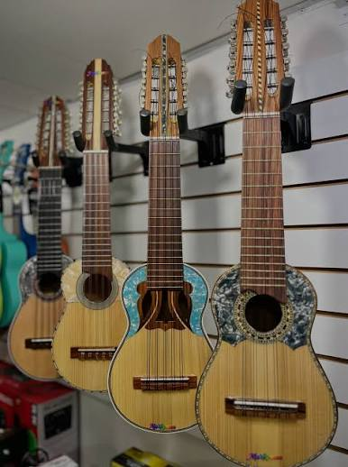
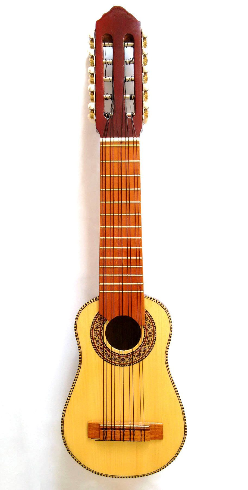
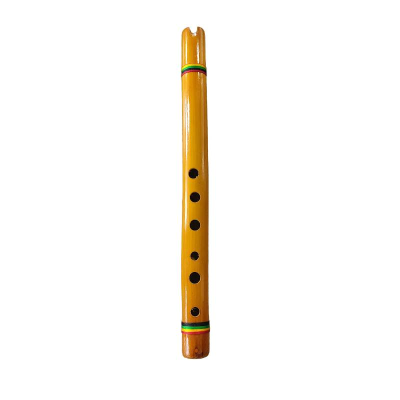
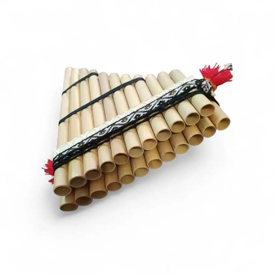
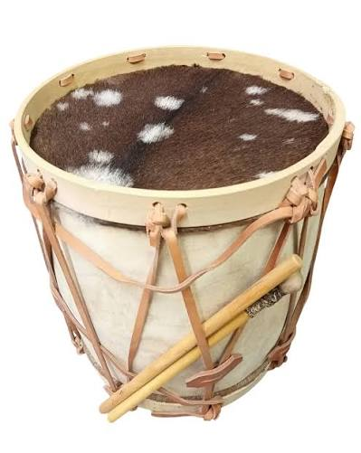
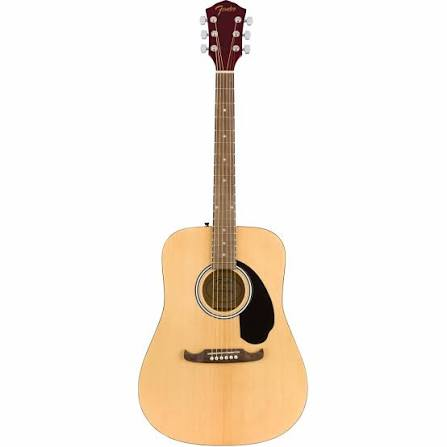
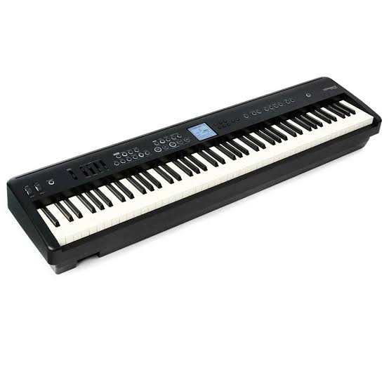

Andino
Charango de diez cuerdas
Tapa en madera de pino, cuerpo abombado, incluye funda básica.
S/ 380.00Toca cada zona de la imagen para saber más sobre esa parte del instrumento.

Instrumentos andinos hechos por artesanos de la región y equipo moderno para complementar tu práctica.
No encontramos instrumentos con ese término.

Tapa en madera de pino, cuerpo abombado, incluye funda básica.
S/ 380.00
Afinación en Sol, seis orificios frontales y uno posterior para el pulgar.
S/ 65.00
Par de hileras — arca e ira — para tocar en dúo o en solitario.
S/ 55.00
Parches de cuero curtido sobre cuerpo de madera ahuecada.
S/ 420.00
Cuerpo dreadnought, cuerdas de acero, ideal para iniciarse.
S/ 450.00
Teclado sensible al toque, ideal para práctica y grabación en casa.
S/ 1450.00| Instrumento | Categoría | Origen | Dificultad | Precio |
|---|---|---|---|---|
| Charango | Cuerda andina | Altiplano andino | Media | S/ 380.00 |
| Quena | Viento andina | Perú y Bolivia | Media–alta | S/ 65.00 |
| Zampoña | Viento andina | Altiplano andino | Alta | S/ 55.00 |
| Bombo legüero | Percusión | Región andina sur | Baja | S/ 420.00 |
| Guitarra acústica | Cuerda moderna | Internacional | Baja–media | S/ 450.00 |
| Teclado digital | Teclado moderno | Internacional | Media | S/ 1450.00 |